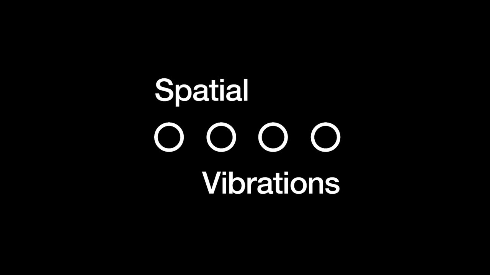
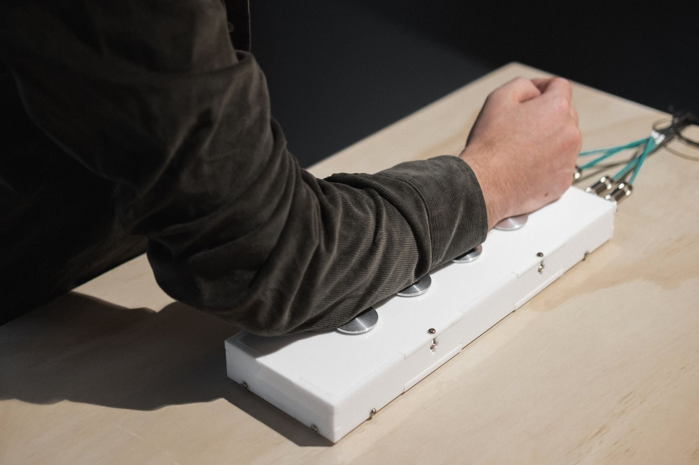
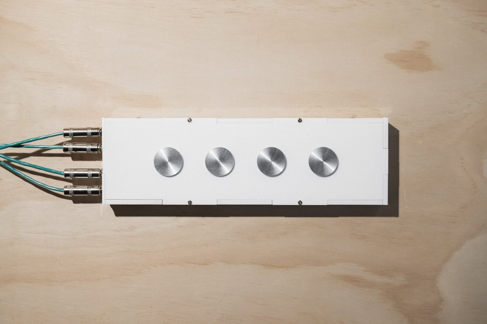

NIME 2022 Demo Submission - Spatial Vibrations
Spatial Vibrations
Author(s)
Jesse Austin-Stewart, Massey University
PubPub Link
https://nime.pubpub.org/pub/wxmutehq/draft?access=9efygluy
Abstract
Spatial Vibrations is a physical interface that one rests their arm on, feeling vibrations from different points. It posits itself at the intersection of haptic audio and spatial and acousmatic music. It aims to break down barriers of hearing to spatial music through the use of haptic audio and no heard sound.
There is a history of haptics being utilised in a variety of musical contexts to approach accessibility issues for hard of hearing and d/Deaf audiences. Spatial Vibrations expands upon this history by utilising accessible haptic methods in a spatial and acousmatic music content through the exploration of spatial compositional methods in a haptic audio context.
The interface was designed with four surface transducers that a person rests their arm on. The transducers vibrate separate from one another, where the participant feels the vibrations at different positions on their arm. The design of the interface allows for explorations of acousmatic gesture both vertically, across the four transducers, and statically, placing acousmatic gestural movement in individual transducers.
Based on user testing, Spatial Vibrations is suggested to successfully break down barriers of participation for hard of hearing and d/Deaf audiences to spatial music, encouraging a more diverse and inclusive field.
Requirements
A programme note, video, and images can be displayed alongside each other.
Program Description
Spatial Vibrations is a physical interface that one rests their arm on, feeling vibrations from different points. It posits itself at the intersection of haptic audio and spatial and acousmatic music. It aims to break down barriers of hearing to spatial music through the use of haptic audio and no heard sound.
There is a history of haptics being utilised in a variety of musical contexts to approach accessibility issues for hard of hearing and d/Deaf audiences. Spatial Vibrations expands upon this history by utilising accessible haptic methods in a spatial and acousmatic music content through the exploration of spatial compositional methods in a haptic audio context.
The interface was designed with four surface transducers that a person rests their arm on. The transducers vibrate separate from one another, where the participant feels the vibrations at different positions on their arm. The design of the interface allows for explorations of acousmatic gesture both vertically, across the four transducers, and statically, with acousmatic gestural movement on individual transducers.
This work has been tested with two spatial audio composers who are also hard of hearing to ascertain both whether it is seen as an effective spatial music work and if it removes barriers of physical accessibility of hearing.
In regards to the spatial aesthetic of the work, Composer One said “It was interesting... I was drawn to the gestures. [The spatiality was found in] identify[ing] that one thing is going and then another thing is going as opposed to a spatial change”. Composer Two also found it interesting, saying that they “think the idea of the confined spatial [space] is at least very conceptually interesting that I haven’t experienced in other [sound] works”.
Summarizing the work, Composer One said “I think this... is the most effective at overcoming my hearing difficulties because you’ve removed the difficulty entirely from people’s experiences”.
This user testing suggests that Spatial Vibrations successfully breaks down barriers of participation for hard of hearing and d/Deaf audiences to spatial music, encouraging a more diverse and inclusive field.
Media

▶



Acknowledgements
Andy Hockey [video and images]